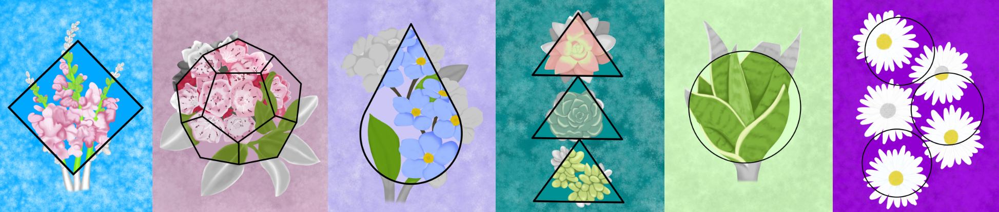

Introducing The New Nature&Shapes Designs
Nature&Shapes Greeting Cards And Stickers Now Available For Purchase
May 2nd, 2022
Two weeks ago I opened up a call to my audience to suggest new combinations for the Nature&Shapes series, a series that started five years ago. Together, we were able to create six new wonderful designs that are now available as greeting cards and stickers.
Nature&Shapes started based on curiosity, but now it has evolved into an art series based on audience participation. I knew that I wanted to create more greeting cards so I wanted to create new paintings with that intention. This allowed me to create the paintings with the right size to create a gorgeous set of greeting cards. While the other paintings are available as greeting cards, this new series was produced with a higher quality, allowing stunning cards to use for any occasion.
The New Designs
Below are the latest designs followed by the official title and the combinations that were given by the audience.

Nature&Shapes-Fi
Snapdragons, skyblue, and a diamond

Nature&Shapes-Mi
Mountain laurel, mauve, and a dodecahedron

Nature&Shapes-No
Forget-me-nots, lilac, and a teardrop

Nature&Shapes-Rp
Succulents, bluish-green, and triangle

Nature&Shapes-Ju
Snake plant, light green, and a circle

Nature&Shapes-Li
Daisies, purple, and a circle
Fun fact: the snake plant in the design Nature&Shapes-Ju is my actual snake plant named "Spike" :)
Now is the perfect time to order!
There are several opportunities to send cards this time of year with graduations, Mother's day, sending "thank you" cards, writing to a pen pal,
and more! The cards come blank so you can use them for any occasion or you can request to have a message printed inside.
The time to order for Mother's Day and college graduations are now! For high school graduations, order by May 21st to get the cards in on time.
There are a couple of in-person oppotunities to get the cards in Columbus. Come see me at the Columbus Alt Art Book Fair at Weinland Park May 7th and 8th from 12pm to 5pm.
Then, at Brewdog Short North on May 15th from 1pm to 6pm. Cards and stickers will be limited at these events but can still be ordered online.